مشغّل البرنامج
دليل منسّق البرنامج
اعمل على قائمة الحالات — افتح الحالة، وتحقّق من هوية المريض ومستنداته، ثم اقبلها أو أعِدها للتصحيح أو ارفضها، وتابع المريض المقبول جرعةً بعد جرعة.
لمنسّقي البرامج الذين يراجعون حالات برامج دعم المرضى في بوابة مشغّل البرنامج.
اضغط على الصورة لتكبيرها.
قبل أن تبدأ
بوابة مشغّل البرنامج صفحة ويب تُستخدم من الكمبيوتر. بصفتك منسّق برنامج لا ترى إلا عمل الحالات: قائمة الحالات، والحالات نفسها، وتسجيل المرضى، وزيارات الممرضات، وقرب انتهاء الصلاحية، وإشعاراتك. أمّا البرامج والمنتجات والشبكات وتوزيع الأماكن ومستخدمو البوابة فيُعدّها مسؤول المشغّل — راجع دليل مسؤول المشغّل.
- بيانات الدخول. ينشئ مسؤول المشغّل حسابك: رقم هاتف وكلمة مرور. الحساب لك وحدك، وكل قرار تتخذه يُسجَّل باسمك.
- الحالات التي تراها. حالات البرامج المعيَّنة لك.
- قاعدة واحدة يجب تذكّرها. فتح الحالة يقفلها عليك، ويحرّرها عدّاد الوقت لاحقًا. لا يُحفظ أي شيء قبل أن تضغط زر القرار، فكل ما تتركه ناقصًا يضيع عندما تغادر الحالة أو ينتهي العدّاد.
تسجيل الدخول
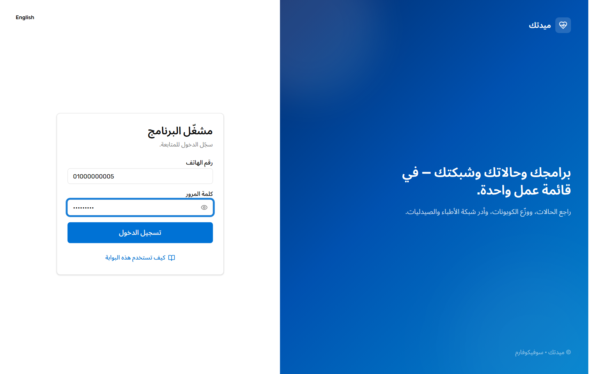
- 1رقم الهاتف — رقم الهاتف المسجَّل به حسابك.
- 2كلمة المرور — كلمة مرورك.
- 3اضغط على العين لإظهار كلمة المرور أثناء كتابتها.
- 4تسجيل الدخول يفتح قائمة الحالات.
- 5بدّل لغة الشاشة بين العربية وEnglish في أي وقت.
- 6كيف تستخدم هذه البوابة يفتح أدلة الاستخدام في تبويب جديد.
التنقّل في البوابة

- 1الحالات — قائمة الحالات، وهي شاشتك الرئيسية.
- 2تسجيل مريض — تظهر فقط إذا كان مسموحًا لك بتسجيل المرضى بنفسك.
- 3زيارات الممرضات — زيارات الممرضة المنزلية الخاصة بحالاتك.
- 4قرب انتهاء الصلاحية — مرضى ينبغي الاتصال بهم بشأن عبوات قاربت صلاحيتها على الانتهاء.
- 5الإشعارات — تعرض النقطة الحمراء عدد غير المقروء.
- 6زر الشمس يبدّل بين الشاشة الفاتحة والداكنة.
- 7الإعدادات — لاختيار اللغة، أو فتح هذا الدليل من دليل الاستخدام، أو تسجيل الخروج. سجّل الخروج دائمًا عند ترك جهاز مشترك.
قائمة الحالات
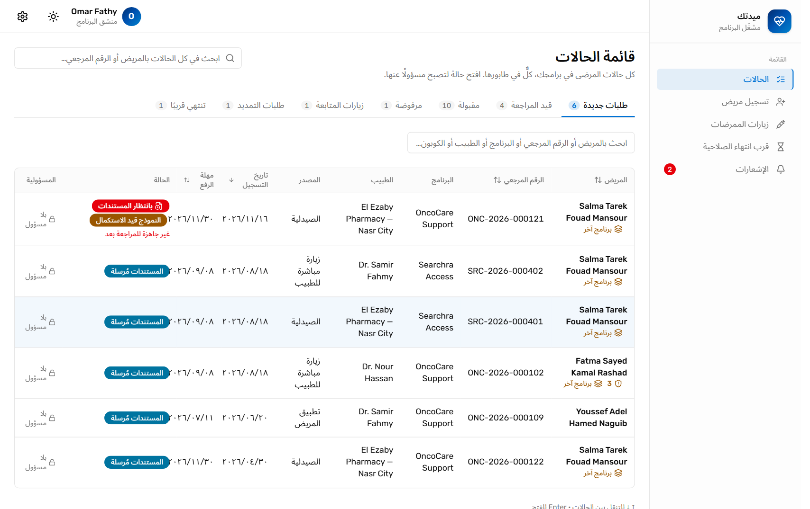
- 1ابحث في كل الحالات، في جميع الطوابير، بالمريض أو الرقم المرجعي.
- 2الطوابير. الرقم بجوار كل تبويب هو عدد الحالات المنتظرة فيه.
- 3ابحث داخل التبويب المفتوح فقط — بالمريض أو الرقم المرجعي أو البرنامج أو الطبيب أو الكوبون.
- 4اضغط على اسم المريض أو على أي موضع في الصف لفتح الحالة.
- 5اضغط على عنوان عمود يحمل أسهمًا للترتيب حسبه. الأحدث تسجيلًا يأتي أولًا.
- 6الحالة — المرحلة التي وصلت إليها الحالة (انظر الجدول أدناه).
- 7المسؤولية — مَن يعمل على الحالة الآن.
| التبويب | ما ينتظر فيه |
|---|---|
| طلبات جديدة | حالات وصلت مستنداتها للتو، وحالات جديدة ما زال نموذج تسجيلها بحاجة إلى استكمال. |
| قيد المراجعة | حالات يجري فحصها، وحالات أُعيدت إلى المريض للتصحيح، وحالات أُعيد إرسالها. |
| مقبولة | الحالات المقبولة، وتبقى هنا طوال فترة استلام جرعاتها. |
| مرفوضة | الحالات المرفوضة. الرفض نهائي. |
| زيارات المتابعة | نتائج متابعة أرسلها الطبيب وتنتظر مراجعتك. |
| طلبات التمديد | مرضى طلبوا وقتًا إضافيًا لرفع مستنداتهم. |
| تنتهي قريبًا | كوبونات مقبولة تنتهي صلاحيتها غدًا، ويعرض عمود التاريخ في هذا التبويب انتهاء الكوبون. |
يعيدك رابط عودة إلى قائمة الحالات في صفحة الحالة إلى التبويب والصفحة اللذين فتحتها منهما. ويرتّب الفرز الحالات المعروضة في الصفحة التي أمامك. ومن لوحة المفاتيح: ↑ ↓ للتنقل بين الحالات وEnter لفتح إحداها.
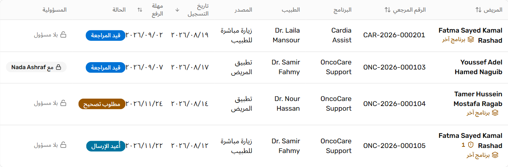
- 1مع … — منسّق آخر فتح هذه الحالة. يمكنك قراءتها لكن لا يمكنك اتخاذ إجراء عليها.
- 2بلا مسؤول — لم يأخذها أحد؛ افتحها لتصبح مسؤولًا عنها. وتظهر حالاتك أنت بعلامة معك.
- 3مطلوب تصحيح — أُعيدت إلى المريض وتنتظره.
- 4أُعيد الإرسال — أرسل المريض المستندات المصحَّحة، وهي جاهزة لك من جديد.
- 5برنامج آخر — لدى المريض أيضًا حالة نشطة في برنامج آخر لمكتبك.
- 6يعرض الدرع والرقم عدد إشارات إساءة الاستخدام المفتوحة على الحالة.
ابحث عن حالة في أي طابور
إذا لم تكن تعرف الطابور الذي توجد فيه الحالة، فاكتب في خانة البحث أعلى الصفحة.
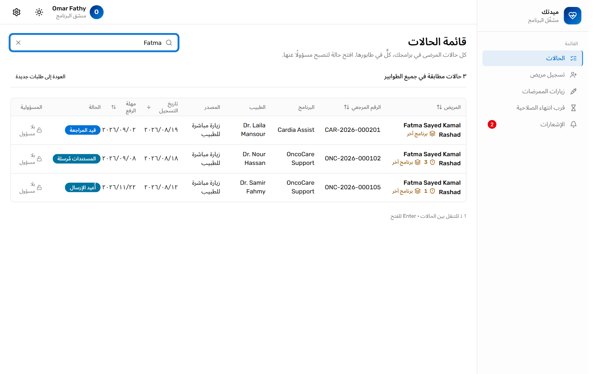
- 1نص البحث. وتمسحه علامة × (أو مفتاح Esc).
- 2عدد الحالات المطابقة في جميع الطوابير. وأثناء البحث تُخلي التبويبات مكانها للنتائج.
- 3العودة إلى … تعيدك إلى التبويب الذي كنت فيه.
- 4تعرض كل حالة وضعها، فتعرف الطابور الذي توجد فيه…
- 5…وهنا قيد المراجعة والمستندات مُرسلة.
إذا كانت في بعض الطوابير نتائج أكثر مما يظهر، تخبرك الصفحة بذلك — فاكتب جزءًا أكبر من الاسم أو الرقم المرجعي.
حالات الطلب
| الحالة | المعنى |
|---|---|
| بانتظار المستندات | سُجّل المريض ولم يرسل مستنداته بعد. |
| المستندات مُرسلة | وصلت المستندات، وتنتظر الحالة في طلبات جديدة. |
| قيد المراجعة | يفحصها أحد المنسّقين. فتح حالة مستنداتها مُرسلة ينقلها إلى هنا. |
| مطلوب تصحيح | أُعيدت إلى المريض مع ملاحظة، وتنتظره. |
| أُعيد الإرسال | أرسل المريض التصحيحات، وتنتظرك في قيد المراجعة. |
| مقبولة | الكوبون نشط، ويمكن تسليم الجرعات. |
| مرفوضة | قرار نهائي؛ لا يعود المريض إلا بتسجيل جديد. |
| ملغاة | أُلغي الكوبون بعد القبول. |
| أُغلقت — انتهت مهلة الرفع | انقضت مهلة رفع المستندات قبل مراجعة الحالة. |
فتح الحالة ومراجعتها
١. اقرأ الحالة قبل فتحها
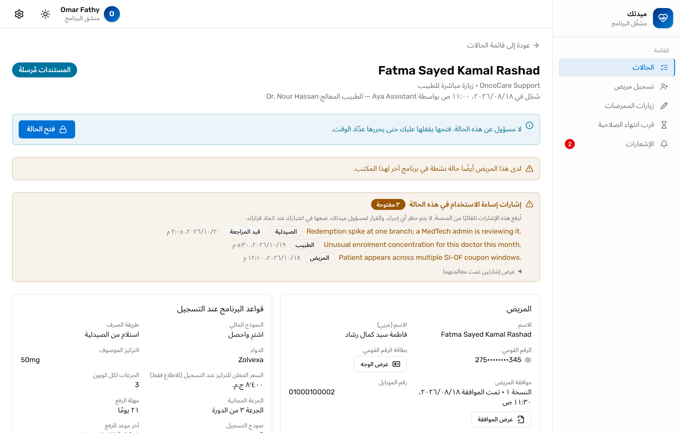
- 1اسم المريض والبرنامج وطريقة تسجيله — متى، وبواسطة مَن، وتحت إشراف أي طبيب.
- 2حالة الطلب.
- 3لا مسؤول عن هذه الحالة. يمكنك قراءة كل شيء، لكن لا يمكنك اتخاذ إجراء بعد.
- 4فتح الحالة يقفل الحالة عليك.
- 5يظهر هذا التنبيه عندما تكون للمريض حالة نشطة في برنامج آخر لمكتبك.
- 6إشارات إساءة الاستخدام في هذه الحالة — ترفعها المنصة؛ انظر الخطوة ٧.
- 7عودة إلى قائمة الحالات تعيدك إلى التبويب الذي فتحت منه الحالة.
٢. افتح الحالة — فتُقفل عليك
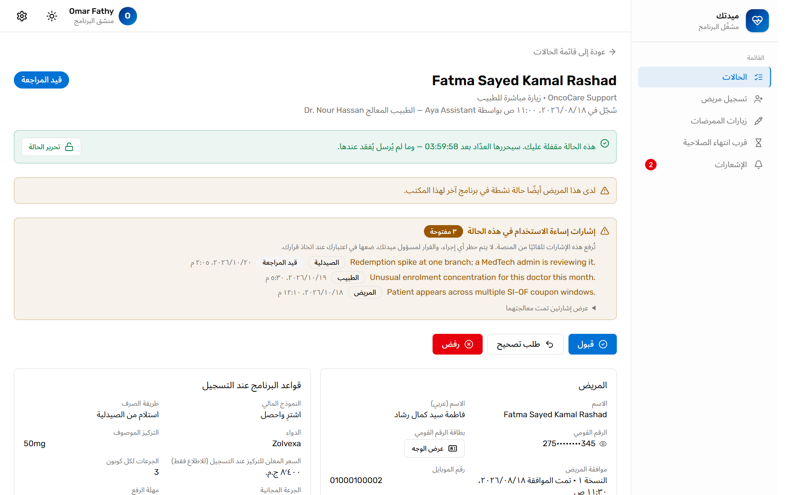
- 1هذه الحالة مقفلة عليك. يعرض العدّاد الوقت المتبقي قبل أن يحرّرها.
- 2تحرير الحالة يعيدها فورًا إلى الطابور إذا توقفت عن العمل عليها.
- 3فتح حالة مستنداتها مُرسلة ينقلها إلى قيد المراجعة.
- 4قبول…
- 5…وطلب تصحيح…
- 6…ورفض لا تظهر إلا والحالة مقفلة عليك.
يحدّد مسؤول المشغّل مدة عدّاد التحرير لكل برنامج.
٣. راجع بيانات المريض وقواعد البرنامج
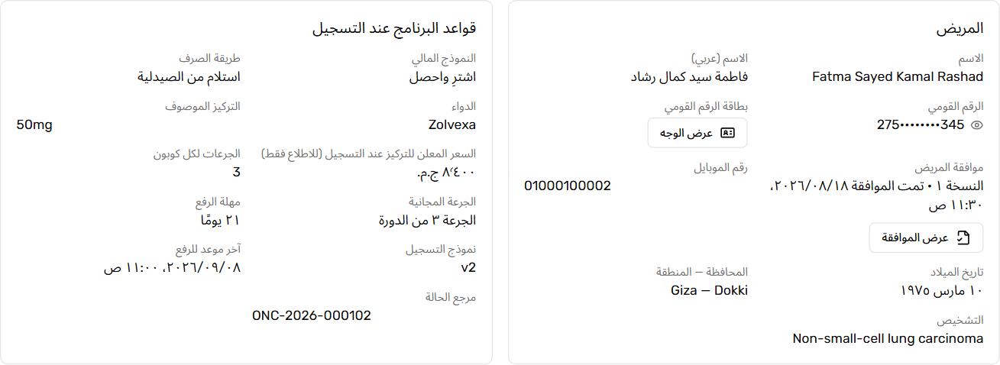
- 1الرقم القومي — مخفي جزئيًا. اضغط على العين لإظهار الرقم كاملًا عند الحاجة.
- 2بطاقة الرقم القومي — عرض الوجه وعرض الظهر تفتحان صورتي بطاقة المريض.
- 3موافقة المريض — النسخة التي وافق عليها المريض وتاريخ موافقته؛ وزر عرض الموافقة يفتحها.
- 4قواعد البرنامج عند التسجيل — القواعد التي تسري على هذه الحالة، مثبّتة كما كانت يوم التسجيل، ولا تغيّرها أي تعديلات لاحقة على البرنامج.
- 5السعر المعلن للتركيز عند التسجيل (للاطلاع فقط) — للاسترشاد فقط؛ وتظهر عبارة غير مسجَّل عند التسجيل إذا لم يُسجَّل سعر.
- 6آخر موعد للرفع — آخر يوم لرفع مستندات المريض.
وتجد كذلك رقم الموبايل وتاريخ الميلاد والمحافظة والمنطقة والتشخيص.
٤. اطّلع على بطاقة الرقم القومي
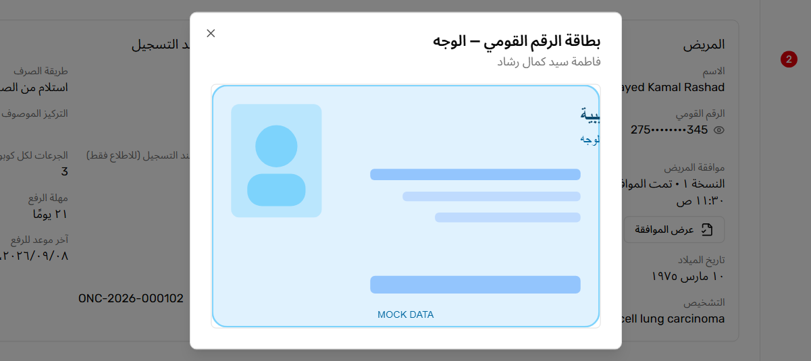
- 1بطاقة الرقم القومي — الوجه (أو الظهر)، مع اسم المريض.
- 2قارن الصورة باسم المريض ورقمه القومي.
- 3أغلقها بزر × أو بمفتاح Esc.
إذا لم يرفع المريض صور البطاقة تعرض الحالة عبارة لا توجد صور للبطاقة.
٥. راجع الموافقة
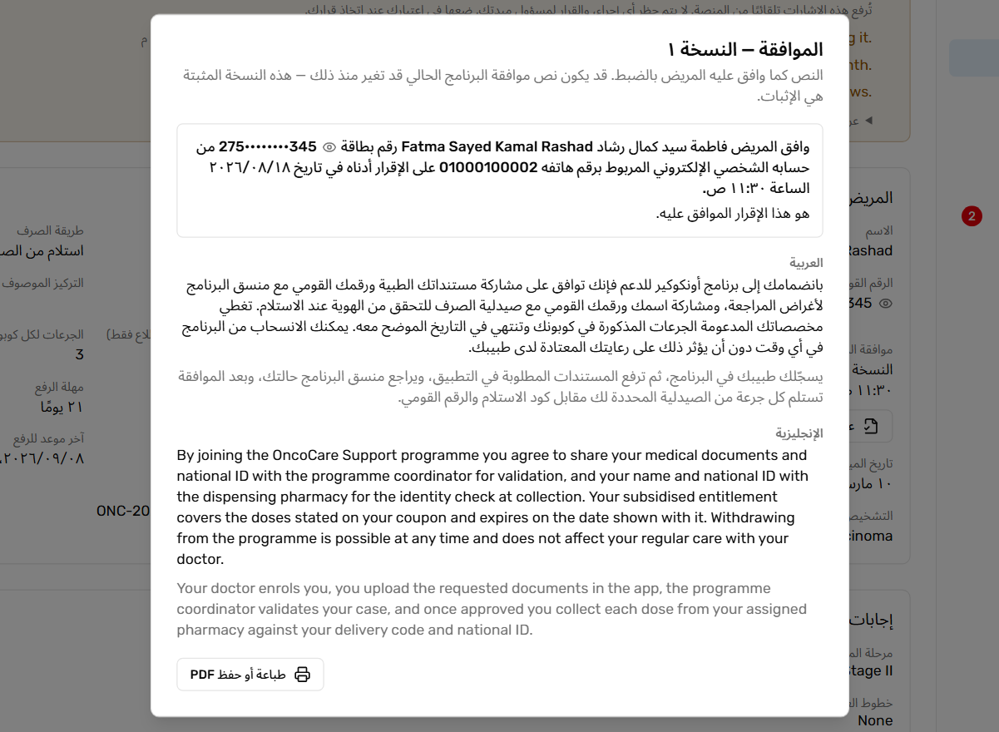
- 1الموافقة — النسخة … — النص مثبّتًا كما كان لحظة موافقة المريض.
- 2مَن وافق — مع الرقم القومي مخفيًا جزئيًا (وتُظهره العين) — ورقم الهاتف والتاريخ والوقت.
- 3نص الموافقة بالعربية…
- 4…وبالإنجليزية.
- 5طباعة أو حفظ PDF يطبع السجل، وتُبقي النسخة المطبوعة الرقم القومي مخفيًا جزئيًا دائمًا.
٦. اقرأ الإجابات والمستندات
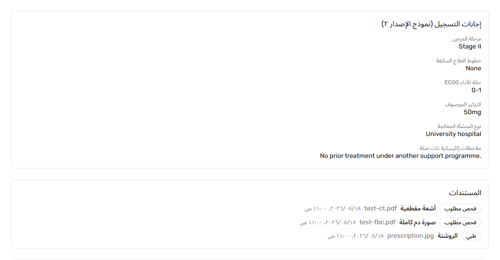
- 1إجابات التسجيل — إجابات الطبيب على نسخة النموذج التي سُجّلت بها الحالة.
- 2المستندات — كل ما رفعه المريض.
- 3فحص مطلوب — فحص طلبه البرنامج.
- 4طبي (أو مالي) — نوع المستند.
- 5اضغط على اسم الملف لمعاينته في الصفحة نفسها، وتجد زر فتح في تبويب جديد داخل المعاينة. ويظهر بجوار كل ملف وقت رفعه.
٧. ضع إشارات إساءة الاستخدام في اعتبارك
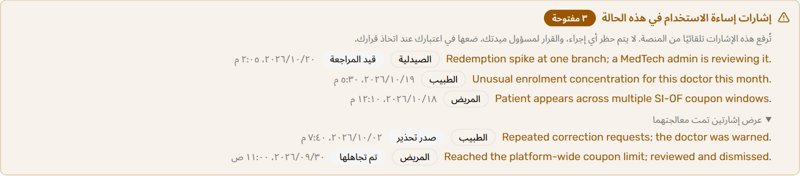
- 1إشارات إساءة الاستخدام في هذه الحالة، وعدد المفتوح منها.
- 2ترفعها المنصة تلقائيًا. لا يُحظر أي إجراء، والقرار لمسؤول MedTech.
- 3كل إشارة: ما الذي رُصد، ومَن المعنيّ بها (المريض أو الطبيب أو الصيدلية)، ومتى. وتعني قيد المراجعة أن مسؤولًا في MedTech يتابعها بالفعل.
- 4عرض … تمت معالجتها يفتح الإشارات المغلقة مع الإجراء الذي اتُّخذ.
لا يمكنك تعديل الإشارة، لكن ضعها في اعتبارك عند اتخاذ قرارك. وقد يظهر وصف بعض الإشارات بالإنجليزية.
٨. أضف ملاحظة إلى سجل الحالة
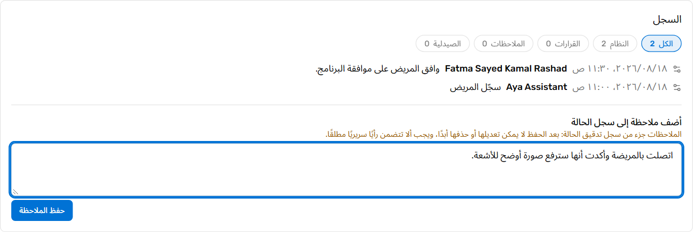
- 1صفِّ السجل: الكل أو النظام أو القرارات أو الملاحظات أو الصيدلية، ويظهر بجوار كلٍّ عدد مدخلاته.
- 2يعرض كل مدخل الوقت ومَن قام بالإجراء وما حدث، والأحدث أولًا.
- 3الملاحظات جزء من سجل التدقيق: لا يمكن تعديلها أو حذفها أبدًا، ويجب ألا تتضمن رأيًا سريريًا.
- 4اكتب ملاحظتك — نتيجة مكالمة هاتفية مثلًا.
- 5حفظ الملاحظة. تحتاج الملاحظات إلى قفل الحالة مثل أي قرار.
حالة يعمل عليها منسّق آخر
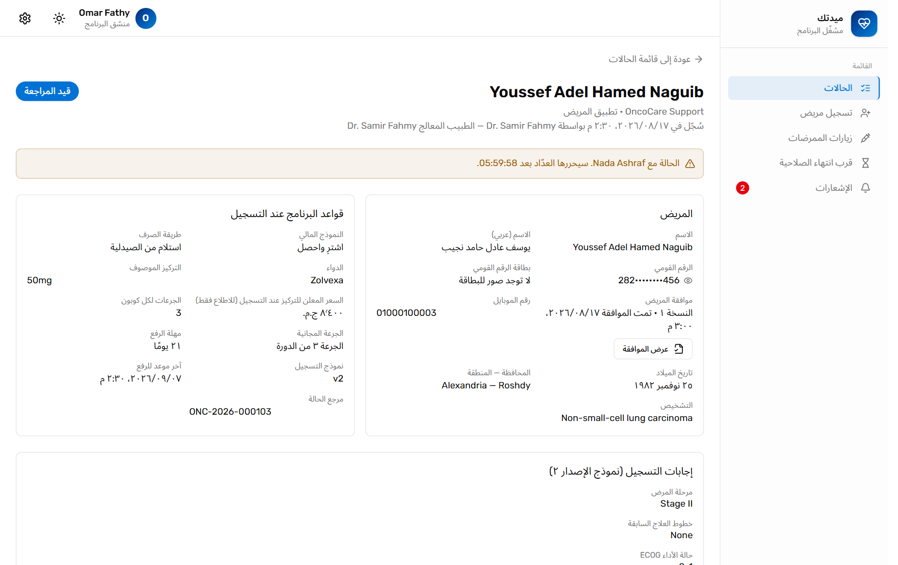
- 1يمكنك قراءة الحالة كاملة.
- 2تذكر اللوحة اسم المنسّق الذي يعمل عليها، ومتى يحرّرها العدّاد. ولا يظهر زر فتح الحالة قبل ذلك.
ولا يظهر زر فتح الحالة كذلك في الحالات المرفوضة أو الملغاة أو المغلقة، إذ لم يعد هناك ما يُقرَّر.
اتخاذ القرار
يحتاج كل قرار إلى قفل الحالة. ويفتح كل قرار نافذة لتأكيده، وزر إلغاء يغلقها دون اتخاذ القرار.
القبول
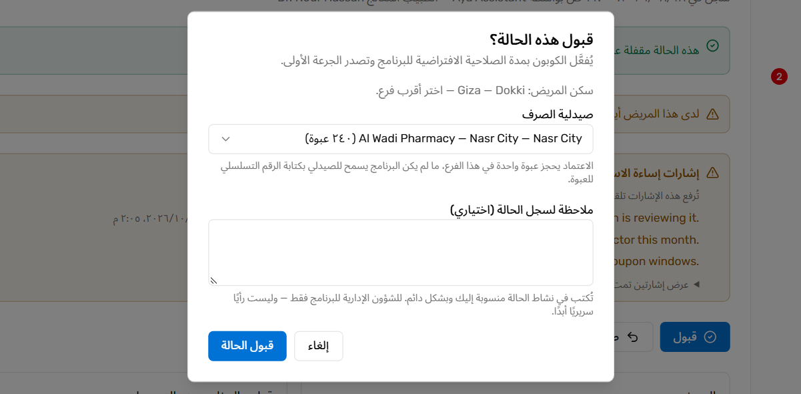
- 1قبول هذه الحالة؟ يُفعَّل الكوبون بمدة الصلاحية الافتراضية للبرنامج، وتصدر الجرعة الأولى.
- 2محافظة المريض ومنطقة سكنه — اختر أقرب فرع.
- 3صيدلية الصرف — كل فروع البرنامج مع عدد العبوات في كل فرع. وإذا كانت صيدلية هي التي سجّلت المريض، يكون فرعها مختارًا مسبقًا ويمكنك تغييره.
- 4يحجز القبول عبوة واحدة في الفرع المختار، ما لم يكن البرنامج يسمح للصيدلي بكتابة الرقم التسلسلي للعبوة.
- 5ملاحظة لسجل الحالة (اختياري) — تُكتب في السجل باسمك وبشكل دائم.
- 6قبول الحالة يؤكد القرار، فتعود إلى قائمة الحالات وتنتقل الحالة إلى مقبولة.
إذا لم يكن هناك فرع مرتبط بالبرنامج، أو لم تكن في الفرع المختار عبوة، تخبرك النافذة بذلك قبل التأكيد. وفي برامج الممرضة المنزلية لا توجد صيدلية للاختيار. وتتيح بعض البرامج القبول مع تأجيل اختيار الصيدلية — راجع البرامج التي تستخدم البحث المتقدم عن الصيدليات.
القبول مع شريحة المساهمة
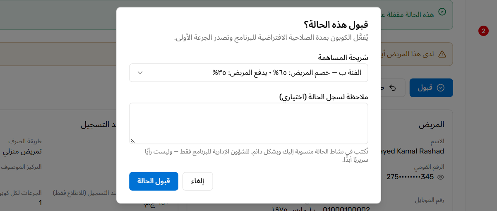
- 1شريحة المساهمة — اختر الشريحة التي قدّرتها. تعرض كل شريحة نسبة خصم المريض وما يدفعه.
- 2ملاحظة لسجل الحالة (اختياري).
- 3قبول الحالة.
الإعادة للتصحيح
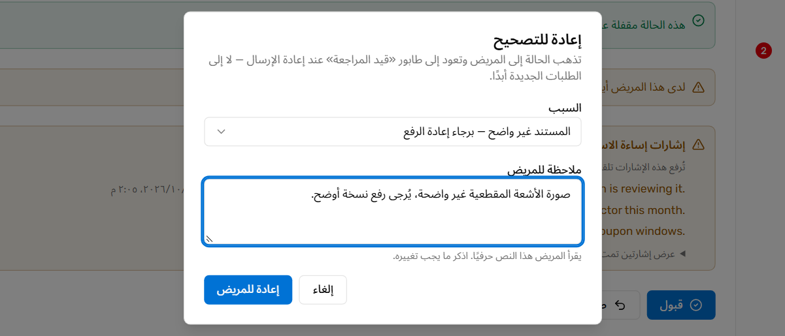
- 1تذهب الحالة إلى المريض، وتعود إلى قيد المراجعة عندما يعيد الإرسال — ولا تعود إلى طلبات جديدة أبدًا.
- 2السبب — اختره من قائمة البرنامج.
- 3ملاحظة للمريض — إلزامية.
- 4يقرأ المريض هذه الملاحظة حرفيًا، فاذكر بوضوح ما يجب تغييره.
- 5إعادة للمريض تؤكد القرار، وتصبح الحالة مطلوب تصحيح.
الرفض
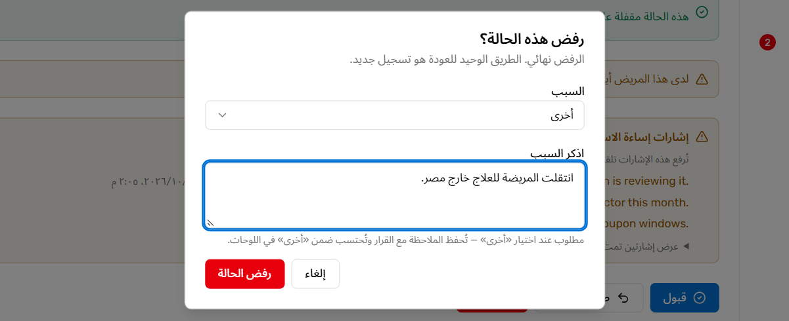
- 1الرفض نهائي. الطريق الوحيد لعودة هذا المريض هو تسجيل جديد.
- 2السبب — اختره من قائمة البرنامج.
- 3إذا اخترت أخرى تظهر خانة اذكر السبب، وتصبح إلزامية.
- 4رفض الحالة يؤكد القرار، فتعود إلى قائمة الحالات وتنتقل الحالة إلى مرفوضة.
حالة أُعيد إرسالها، وطلبات المهلة الإضافية
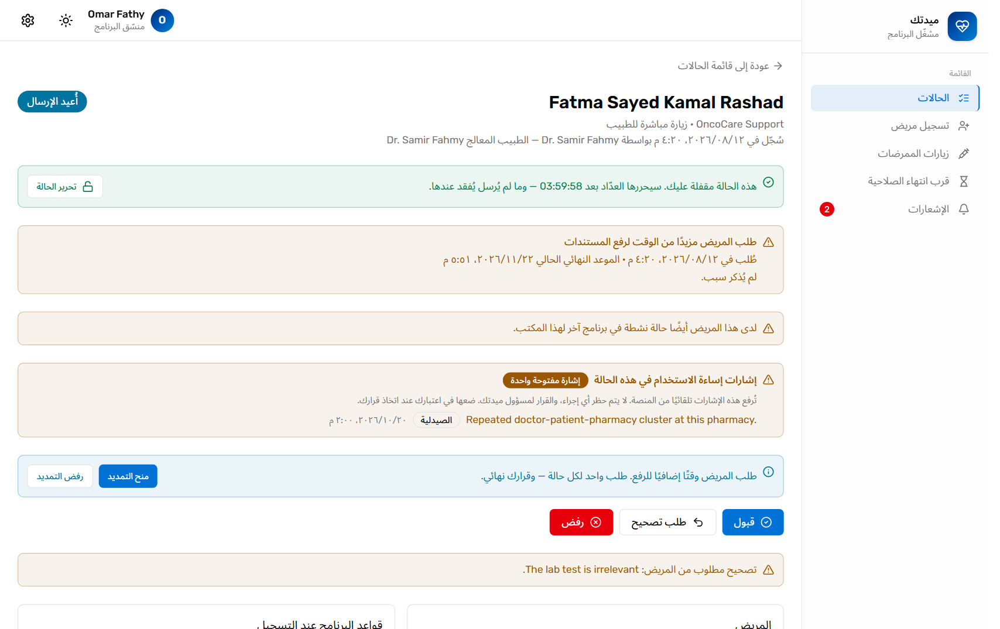
- 1أُعيد الإرسال — أرسل المريض المستندات المصحَّحة.
- 2طلب المريض مزيدًا من الوقت لرفع المستندات — متى طلب، والموعد النهائي الحالي، وسببه.
- 3طلب واحد لكل حالة — وقرارك نهائي.
- 4منح التمديد يؤجّل مهلة الرفع، ورفض التمديد يُبقيها كما هي، وكلاهما يطلب منك التأكيد.
- 5ثم قرّر في الحالة نفسها كالمعتاد: قبول أو طلب تصحيح أو رفض.
- 6التصحيح الذي طلبته في المرة السابقة.
يظهر الطلب حتى قبل فتح الحالة، فتعرف سبب فتحك لها. ويظهر المرضى الذين طلبوا وقتًا إضافيًا أيضًا في تبويب طلبات التمديد.
البرامج التي تستخدم البحث المتقدم عن الصيدليات
في بعض البرامج يمكنك أن تسأل الصيدليات عن توفر الدواء لديها قبل أن تعيّن إحداها. وفي هذه البرامج تظهر بطاقة البحث عن صيدلية على الحالة المقبولة التي لم تُعيَّن لها صيدلية بعد. أمّا في البرامج الأخرى فلا يتغير شيء: تختار الصيدلية عند القبول.
اقبل الآن واختر الصيدلية لاحقًا
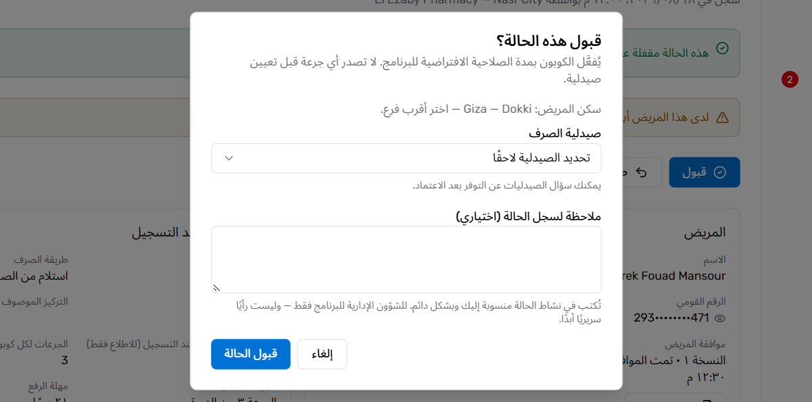
- 1صيدلية الصرف — اختر فرعًا كالمعتاد، أو تحديد الصيدلية لاحقًا.
- 2يمكنك سؤال الصيدليات عن التوفر بعد الاعتماد.
- 3قبول الحالة. يصبح الكوبون نشطًا، لكن لا تصدر أي جرعة قبل تعيين صيدلية، وتبقى في صفحة الحالة.
تأجيل اختيار الصيدلية اختياري، ويمكنك اختيار فرع هنا أيضًا. وفي البرامج التي لا تستخدم البحث المتقدم لا يظهر هذا الخيار، ويلزم اختيار صيدلية لإتمام القبول.
حالة تنتظر صيدلية
يعيد القبول قفل الحالة، فاضغط فتح الحالة من جديد لتتابع العمل عليها.
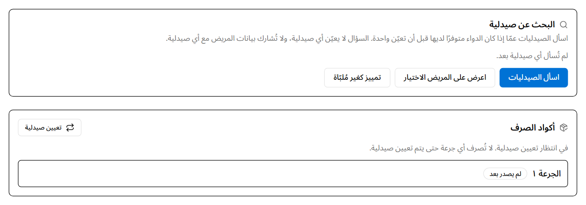
- 1البحث عن صيدلية — السؤال لا يعيّن أي صيدلية، ولا تُشارك بيانات المريض مع أي صيدلية.
- 2لم تُسأل أي صيدلية بعد.
- 3اسأل الصيدليات يرسل طلبات التوفر.
- 4اعرض على المريض الاختيار — بعد أن تؤكد صيدليتان أو أكثر.
- 5تمييز كغير مُلبّاة — عندما لا تستطيع أي صيدلية توفير الدواء.
- 6في انتظار تعيين صيدلية. لا تُصرف أي جرعة حتى يتم تعيين صيدلية. فلا يوجد كود صرف بعد.
- 7تعيين صيدلية يعيّن مباشرةً أي صيدلية من صيدليات البرنامج دون سؤال مسبق.
السؤال ليس شرطًا أبدًا؛ يمكنك تعيين صيدلية في أي وقت.
اسأل الصيدليات
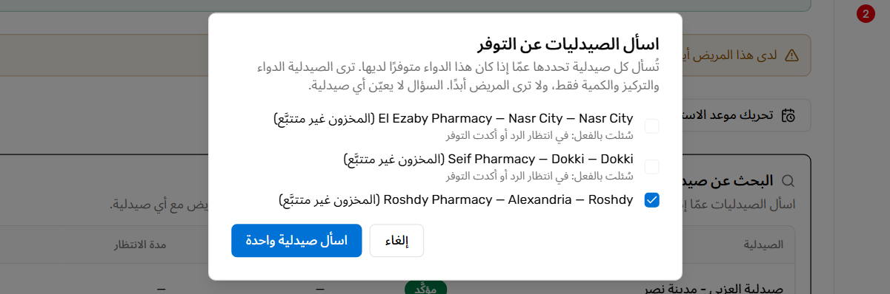
- 1تُسأل كل صيدلية تحددها، ولا ترى إلا الدواء والتركيز والكمية — ولا ترى المريض أبدًا.
- 2الصيدلية التي ما زال طلبها في الانتظار أو مؤكَّدًا لا تُسأل مرتين، ويظهر مربعها باهتًا.
- 3حدّد الصيدليات المطلوب سؤالها. ويمكن سؤال صيدلية رفضت، أو سحبتَ طلبها، مرة أخرى.
- 4اسأل … صيدلية يرسل الطلبات.
إذا كانت صيدلية هي التي سجّلت المريض، تكون محددة مسبقًا، وعليها أن ترد كأي صيدلية أخرى.
تابع الردود
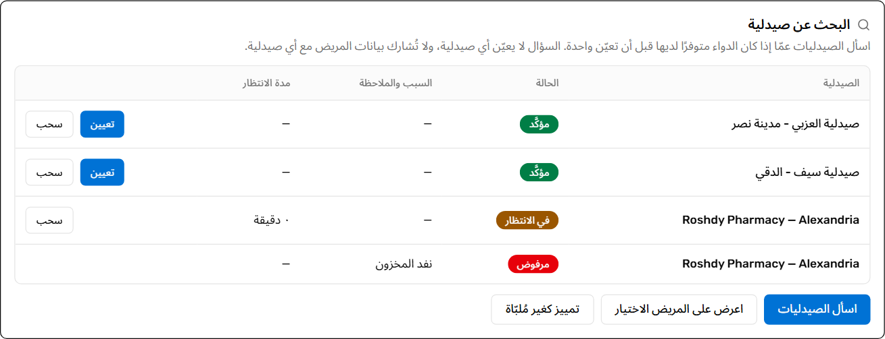
- 1مؤكَّد — تقول الصيدلية إن الدواء متوفر لديها.
- 2في الانتظار — لم يصل رد بعد، ويعرض عمود مدة الانتظار منذ متى.
- 3يعرض الطلب المرفوض سبب الصيدلية، مثل نفد المخزون، وملاحظتها إن كتبت واحدة.
- 4تعيين هذه الصيدلية.
- 5سحب طلب في الانتظار أو مؤكَّد.
- 6اعرض على المريض الاختيار بين الصيدليات المؤكِّدة.
| الحالة | المعنى |
|---|---|
| في الانتظار | أُرسل الطلب ولم ترد الصيدلية بعد. |
| مؤكَّد | الدواء متوفر لدى الصيدلية، دون حجز أي شيء لهذا المريض. |
| مرفوض | مع سبب — نفد المخزون أو لا توفّر هذا الدواء أو أخرى — وأحيانًا ملاحظة. ويمكنك السؤال مرة أخرى. |
| مسحوب | سحبتَ الطلب، ويمكنك السؤال مرة أخرى. |
| مغلق | عُيّنت صيدلية للحالة، فلم يعد الطلب لازمًا. |
يمكنك إرسال طلبات جديدة في أي وقت ما دامت الحالة بلا صيدلية.
اعرض على المريض الاختيار
يعرض زر اعرض على المريض الاختيار الصيدليات التي أكدت التوفر وكلها محددة. ألغِ تحديد ما لا تريد عرضه، وأبقِ صيدليتين على الأقل، ثم اضغط أرسل العرض. وإذا أردت صيدلية واحدة فقط فعيّنها مباشرة.
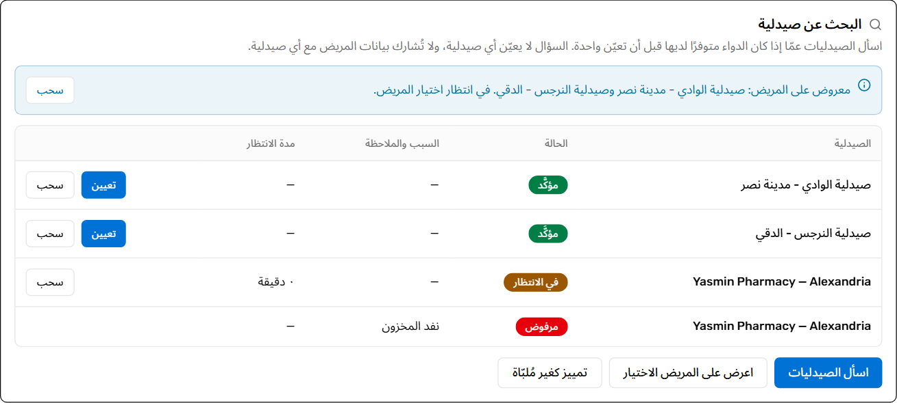
- 1معروض على المريض: … يختار المريض إحدى هذه الصيدليات من تطبيق MedTech، واختياره يعيّنها.
- 2سحب يسترد العرض ما دام المريض لم يختر بعد.
العرض الجديد يحل محل العرض المفتوح، وسحب طلب مؤكَّد يُخرج تلك الصيدلية من العرض. ويبقى بإمكانك تعيين صيدلية بنفسك. ويسجّل سجل الحالة كل طلب ورد وعرض، ويظهر فيه اختيار المريض تحت المريض.
عيّن صيدلية
اضغط تعيين على صف مؤكَّد، أو تعيين صيدلية في بطاقة أكواد الصرف لاختيار أي صيدلية من صيدليات البرنامج، سُئلت أم لم تُسأل. وتطلب منك نافذة تعيين هذه الصيدلية؟ التأكيد: يصدر كود الجرعة، ويُبلَّغ المريض، وتُغلق كل الطلبات الأخرى على الحالة.
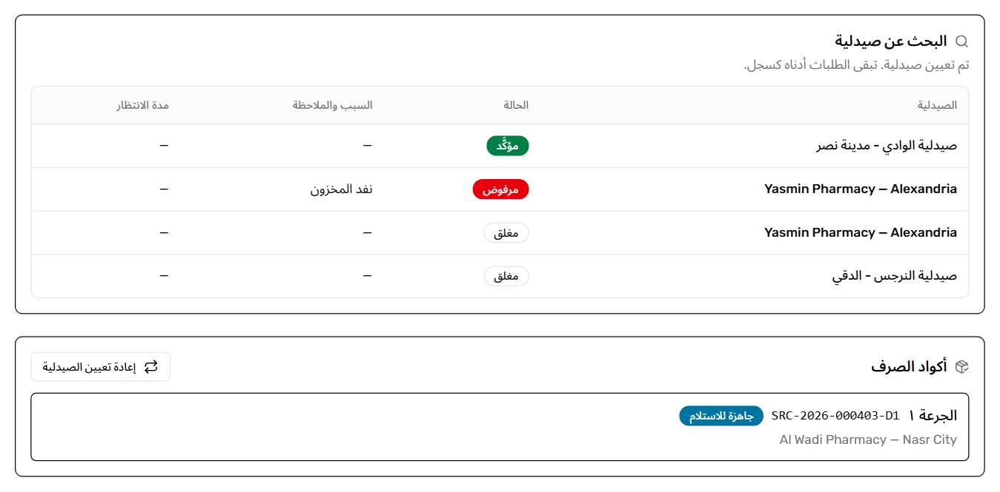
- 1تم تعيين صيدلية. تبقى الطلبات أدناه كسجل.
- 2أصبحت الطلبات الأخرى مغلق.
- 3الجرعة الأولى جاهزة للاستلام في الصيدلية المعيَّنة.
- 4إعادة تعيين الصيدلية يعمل كما في أي حالة مقبولة.
ويحدث الشيء نفسه عندما يختار المريض صيدلية من عرضك.
عندما لا تستطيع أي صيدلية توفير الدواء
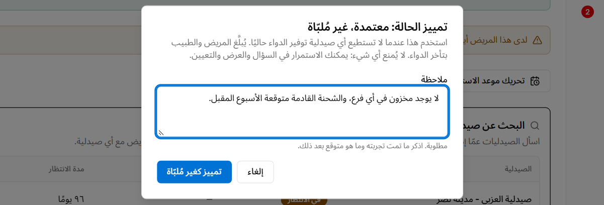
- 1استخدمه عندما لا تستطيع أي صيدلية توفير الدواء حاليًا. يُبلَّغ المريض والطبيب بتأخر الدواء، ولا يُمنع أي شيء.
- 2ملاحظة — إلزامية. اذكر ما تمت تجربته وما هو متوقع بعد ذلك.
- 3تمييز كغير مُلبّاة.
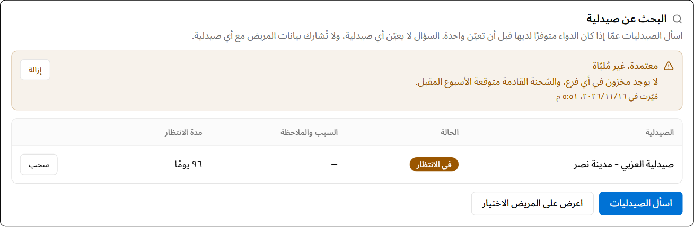
- 1معتمدة، غير مُلبّاة، مع ملاحظتك ووقت التمييز.
- 2إزالة تزيل التمييز عندما تتحرك الأمور من جديد.
- 3تستمر الطلبات كما هي، ويمكنك مواصلة السؤال والعرض والتعيين.
ويزول التمييز تلقائيًا عند تعيين صيدلية.
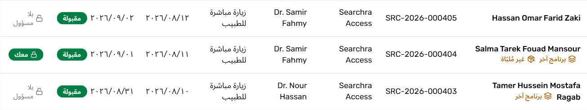
- 1غير مُلبّاة تحت اسم المريض في تبويب مقبولة، ولا يوجد طابور منفصل لهذه الحالات.
- 2العودة إلى قائمة الحالات لا تحرّر الحالة؛ تبقى معك حتى تحرّرها أو يحرّرها العدّاد.
بعد القبول
تبقى الحالة المقبولة في مقبولة طوال فترة استلام جرعاتها. افتحها لتأخذ القفل:
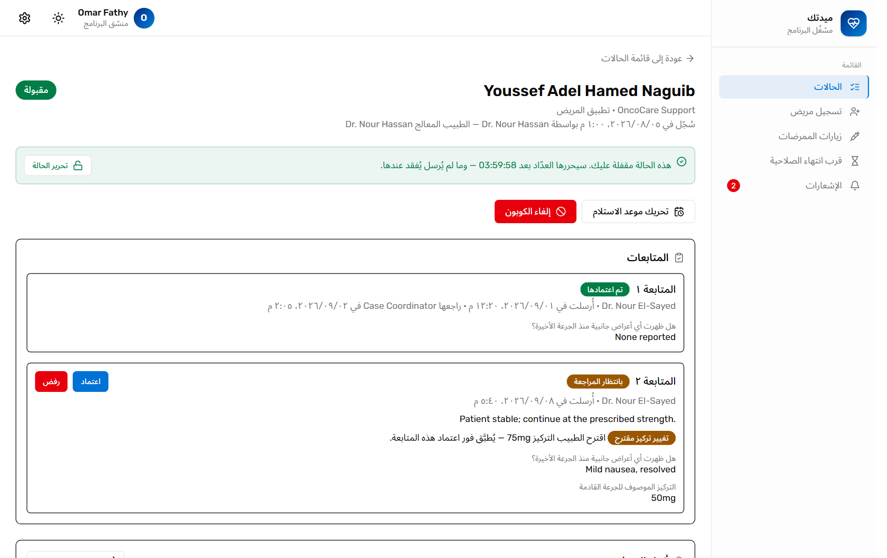
- 1مقبولة.
- 2تحريك موعد الاستلام يمنح المريض وقتًا إضافيًا لاستلام الجرعة الحالية.
- 3إلغاء الكوبون يسحب ما تبقّى من جرعات المريض.
- 4المتابعات — نتائج متابعة الطبيب، إذا كان البرنامج يطلبها.
مراجعة المتابعة
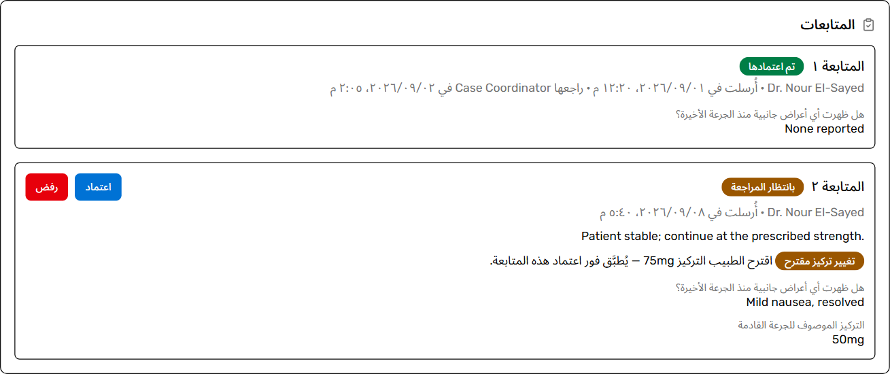
- 1تم اعتمادها — متابعة رُوجعت من قبل، مع اسم مَن راجعها وتاريخ المراجعة.
- 2بانتظار المراجعة — متابعة أرسلها الطبيب.
- 3تغيير تركيز مقترح — اقترح الطبيب تركيزًا جديدًا يُطبَّق فور اعتمادك لهذه المتابعة. وتظهر معه ملاحظات الطبيب وإجاباته.
- 4اعتماد يؤكد النتائج ويفتح كود صرف الجرعة التالية.
- 5رفض يعيد المتابعة، وتبقى الجرعة التالية مقفلة حتى تُقدَّم متابعة مقبولة.
يفتح كل من الزرين نافذة تأكيد مع خانة ملاحظة اختيارية.
أكواد الصرف وصيدلية الصرف
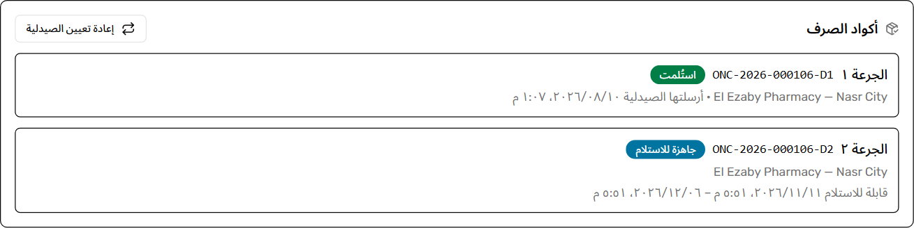
- 1إعادة تعيين الصيدلية — تنقل الحالة إلى فرع آخر، مثلًا عند نفاد المخزون في الفرع أو إغلاقه.
- 2استُلمت — سُلّمت الجرعة، مع اسم الفرع والوقت.
- 3جاهزة للاستلام — يمكن للمريض استلام هذه الجرعة الآن.
- 4قابلة للاستلام — الفترة التي يمكن خلالها استلام هذه الجرعة.
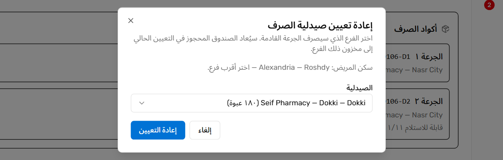
- 1يصرف الفرع المختار الجرعة القادمة، وتعود العبوة المحجوزة في الفرع الحالي إلى مخزونه.
- 2محافظة المريض ومنطقة سكنه.
- 3الصيدلية — اختر الفرع الجديد.
- 4إعادة التعيين تؤكد الإجراء.
تحتاج إعادة التعيين إلى قفل الحالة، ولا تظهر في برامج الممرضة المنزلية، ولا بعد تسليم كل الجرعات.
| حالة الجرعة | المعنى |
|---|---|
| لم يصدر بعد | لم يصدر كود الجرعة بعد — مثلًا لأن متابعة ما تنتظر الاعتماد، أو لأنه لم تُعيَّن صيدلية بعد. |
| جاهزة للاستلام | يمكن للمريض استلامها من الفرع المعيَّن. |
| عند الصيدلية الآن | صيدلي يفتح الكود في هذه اللحظة. |
| بانتظار تأكيد المريض | أرسلت الصيدلية التسليم، ولم يؤكده المريض من هاتفه. |
| استُلمت | تم التسليم. |
| بانتظار تحديد الزيارة / زيارة محددة | جرعات الممرضة المنزلية: بانتظار حجز المريض للموعد، أو تم الحجز. |
| منتهية الصلاحية / ملغاة | لم يعد الكود صالحًا للاستخدام. |
تحرير كود لم يؤكده المريض
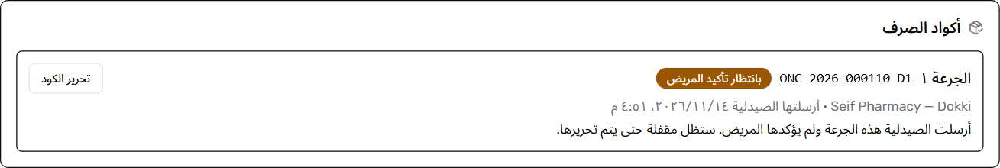
- 1بانتظار تأكيد المريض — أرسلت الصيدلية هذه الجرعة، لكن المريض لم يؤكدها من هاتفه.
- 2تظل الجرعة مقفلة حتى يحرّرها أحد.
- 3تحرير الكود يطلب سبب التحرير (إلزامي، ويُحفظ في سجل التدقيق)، ثم تعود الجرعة إلى جاهزة للاستلام ليتمكن المريض من استلامها مرة أخرى.
لا يحتاج تحرير الكود إلى قفل الحالة.
تحريك موعد الاستلام
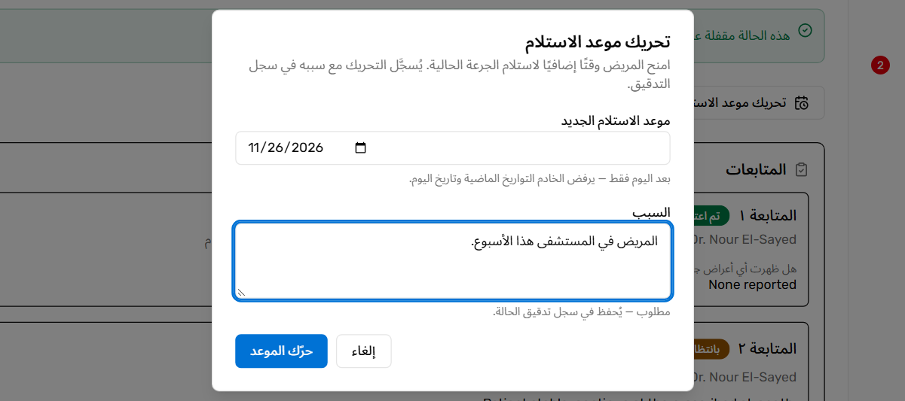
- 1يُسجَّل التحريك مع سببه.
- 2موعد الاستلام الجديد — بعد اليوم فقط.
- 3السبب — إلزامي.
- 4حرّك الموعد يؤكد الإجراء.
استخدمه مثلًا من تبويب تنتهي قريبًا عندما لا يستطيع المريض الوصول إلى الصيدلية قبل انتهاء الكوبون. لا تُمدَّد أي مهلة دون قرار منك.
إلغاء الكوبون
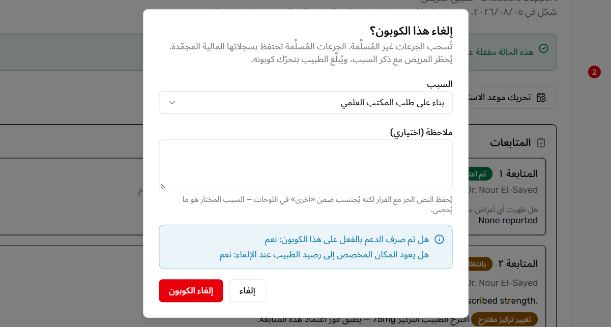
- 1تُسحب الجرعات التي لم تُسلَّم، وتحتفظ الجرعات المسلَّمة بسجلاتها المالية. ويُبلَّغ المريض بالسبب، ويُبلَّغ الطبيب بتحرّك كوبونه.
- 2السبب — إلزامي، من قائمة البرنامج.
- 3ملاحظة (اختياري) — إلزامية فقط مع السبب أخرى.
- 4هل صُرف دعم بالفعل على هذا الكوبون، وهل يعود المكان إلى رصيد الطبيب.
- 5إلغاء الكوبون يؤكد القرار، فتصبح الحالة ملغاة وتعود إلى قائمة الحالات.
استكمال نموذج تسجيل أجرته صيدلية أو منسّق
عندما تسجّل صيدلية أو منسّق مريضًا، تُدخَل الهوية والبرنامج فقط، ثم يستكمل أحد المنسّقين نموذج التسجيل الطبي من صفحة الحالة. ولا يمكن اتخاذ أي قرار قبل ذلك.
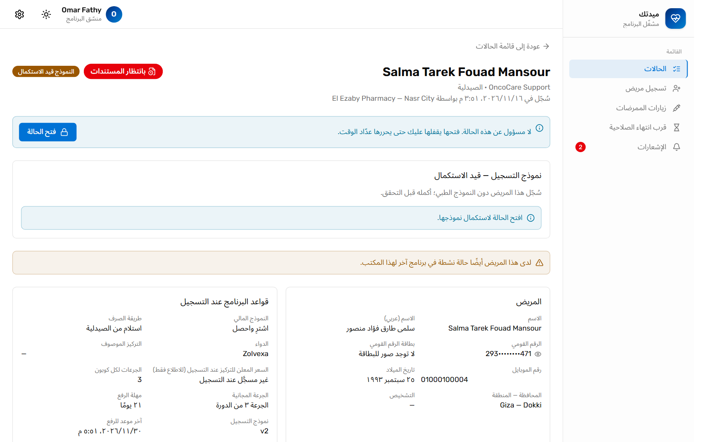
- 1اسم المريض.
- 2النموذج قيد الاستكمال.
- 3متى سُجّل المريض وبواسطة مَن — هنا فرع صيدلية.
- 4فتح الحالة لأخذ القفل.
- 5سُجّل هذا المريض دون النموذج الطبي؛ أكمله قبل التحقق.
- 6افتح الحالة لاستكمال نموذجها.
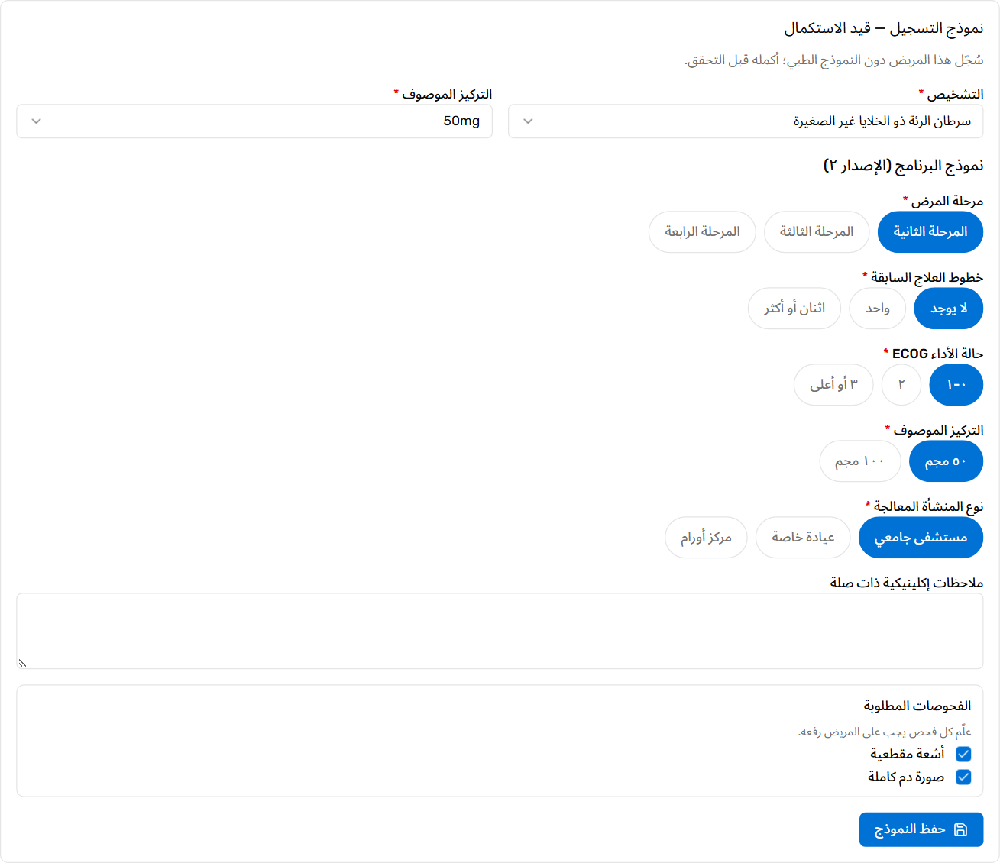
- 1التشخيص.
- 2التركيز الموصوف.
- 3أجب عن كل أسئلة نموذج البرنامج، والنجمة الحمراء تعني أن السؤال إلزامي.
- 4علّم كل فحص يجب على المريض رفعه.
- 5يعمل زر حفظ النموذج عندما لا يبقى شيء ناقص، ويعدّ السطر الذي فوقه ما تبقّى.
بعد الحفظ تظهر رسالة اكتمل النموذج — يمكن الآن التحقق من الحالة. ويعيد الحفظ القفل أيضًا، فافتح الحالة من جديد عندما تصبح جاهزة لقرارك. وما زال على المريض رفع مستنداته من التطبيق.
تسجيل مريض بنفسك
يظهر تسجيل مريض في القائمة فقط إذا سمح لك مسؤول المشغّل بالتسجيل. تتأكد من هوية المريض وتختار البرنامج، ثم يُكمل المريض من التطبيق ويُستكمل النموذج الطبي من صفحة الحالة. ويُخصم مكان واحد عند الإرسال.
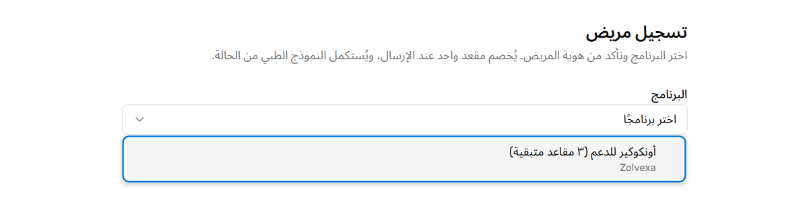
- 1تسجيل مريض.
- 2البرنامج — افتح القائمة.
- 3يعرض كل برنامج عدد الأماكن المتبقية لك فيه.
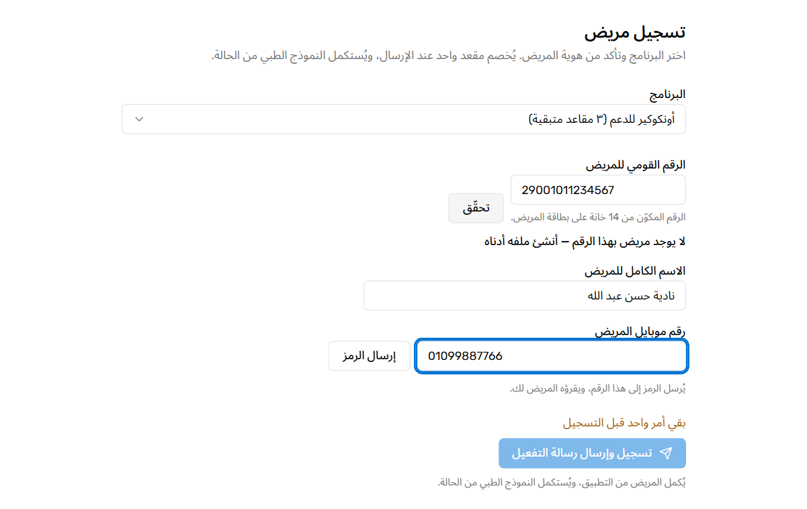
- 1الرقم القومي للمريض — الأرقام الأربعة عشر على بطاقة المريض.
- 2تحقّق يبحث عن المريض.
- 3لا يوجد مريض بهذا الرقم — فتُنشئ له ملفًا مختصرًا.
- 4الاسم الكامل للمريض — كما في البطاقة.
- 5رقم موبايل المريض — رقم المريض نفسه.
- 6إرسال الرمز يرسل رمز تأكيد إلى هذا الرقم.
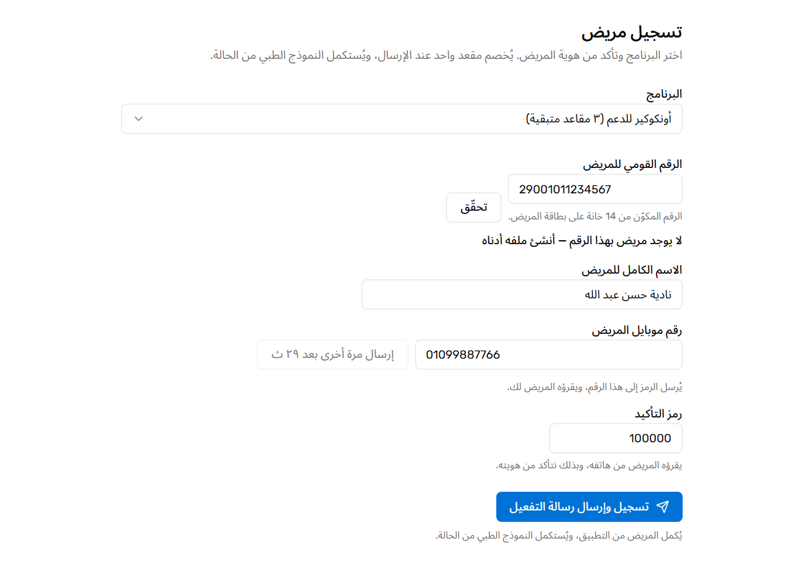
- 1أُرسل الرمز (وتعرض رسالةٌ الرقمَ الذي أُرسل إليه). إذا لم يصل، اضغط إرسال مرة أخرى بعد انتهاء العد التنازلي.
- 2رمز التأكيد — يقرؤه لك المريض من هاتفه.
- 3تسجيل وإرسال رسالة التفعيل يسجّل المريض ويرسل له رسالة بكيفية المتابعة في التطبيق.
- 4يُكمل المريض من التطبيق، ويُستكمل النموذج الطبي من صفحة الحالة.
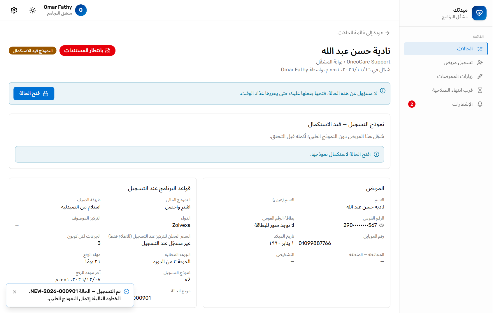
- 1تم التسجيل — الحالة … وتُفتح الحالة الجديدة.
- 2مصدرها بوابة المشغّل، مع تاريخ التسجيل ومَن أجراه.
- 3النموذج قيد الاستكمال.
- 4افتح الحالة واستكمل نموذجها كما سبق.
إذا كان المريض معروفًا لدى MedTech:
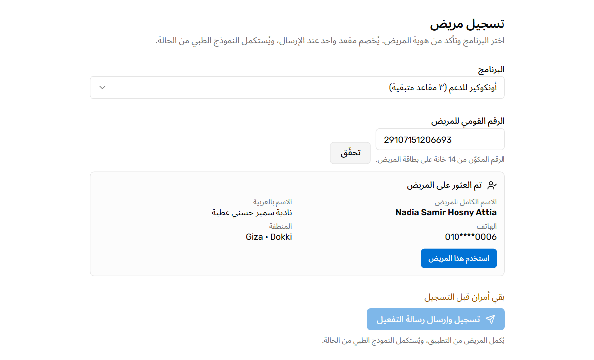
- 1تم العثور على المريض.
- 2اسم المريض واسمه بالعربية ومنطقته، ورقم هاتفه مخفيًا جزئيًا — قارنها بالبطاقة.
- 3استخدم هذا المريض ثم إرسال الرمز، فيُرسل الرمز إلى رقم الموبايل المسجَّل. وأكمل كما سبق.
قرب انتهاء الصلاحية
قائمة يومية بمرضى ينبغي الاتصال بهم بشأن عبوات استلموها اقترب موعد انتهاء صلاحيتها. وهي ليست قائمة مخزون صيدليات.
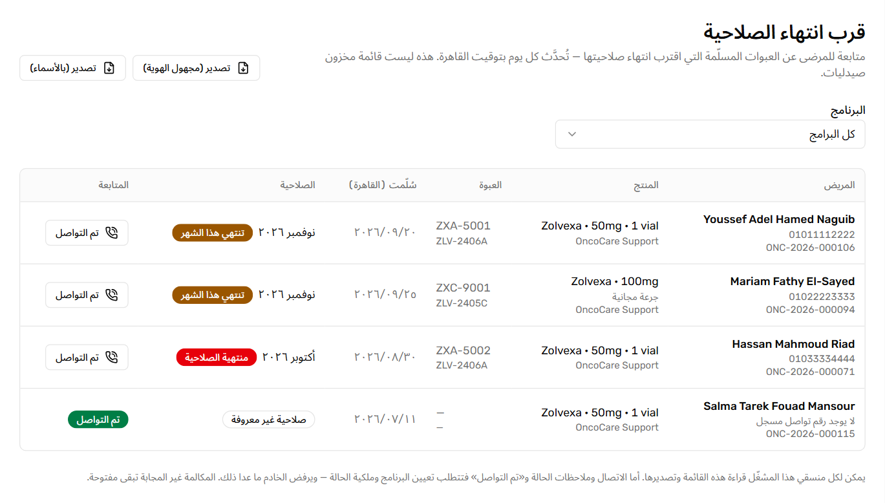
- 1البرنامج — اعرض برنامجًا واحدًا أو كل البرامج.
- 2تصدير (مجهول الهوية) ينزّل القائمة دون أسماء المرضى…
- 3…وتصدير (بالأسماء) ينزّلها بالأسماء.
- 4اسم المريض وهاتفه ورقم حالته. اضغط على الاسم لفتح الحالة، وسجّل في سجلها ما أخبرك به المريض.
- 5تنتهي هذا الشهر أو منتهية الصلاحية أو صلاحية غير معروفة. وتُتابَع الجرعة المجانية أيضًا.
- 6اضغط تم التواصل بعد أن تصل إلى المريض.
- 7تظهر شارة تم التواصل عندما تنتهي المتابعة.
المكالمة التي لم يُرَدّ عليها تبقى مفتوحة، فاترك الصف كما هو. ويستطيع كل منسّقي مكتبك قراءة القائمة وتصديرها، أمّا الاتصال والملاحظات وزر تم التواصل فتحتاج أيضًا إلى تعيينك على البرنامج وإلى قفل الحالة.
زيارات الممرضات
في برامج الممرضة المنزلية: زيارات حالاتك.
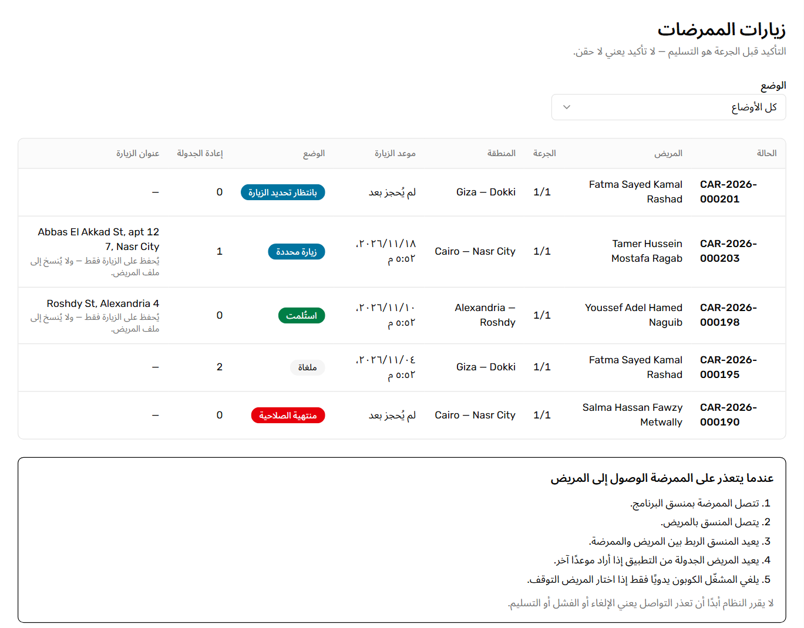
- 1الوضع — اعرض الزيارات في وضع واحد، أو كل الأوضاع.
- 2وضع كل زيارة، مثل زيارة محددة.
- 3يُحفظ عنوان الزيارة على الزيارة فقط، ولا يُنسخ إلى ملف المريض.
- 4عندما يتعذر على الممرضة الوصول إلى المريض — الخطوات الواجب اتباعها.
- 5لا يعتبر النظام أبدًا أن تعذّر التواصل يعني الإلغاء أو الفشل أو التسليم.
هذه الصفحة للاطلاع فقط؛ فالمريض هو من يؤكد الزيارة من التطبيق.
الإشعارات
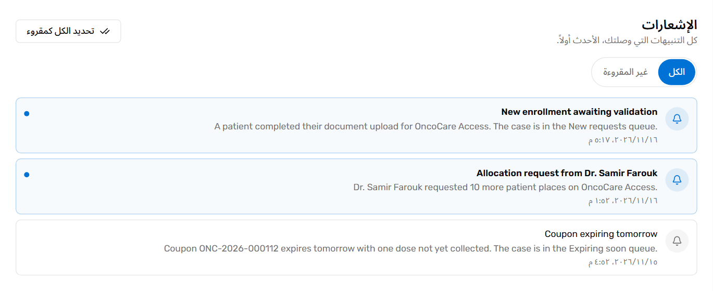
- 1تحديد الكل كمقروء يزيل علامات غير المقروء.
- 2اعرض الكل أو غير المقروءة فقط.
- 3يذكر كل إشعار ما حدث ومتى، وتميّز النقطة الإشعار غير المقروء؛ اضغط عليه لتحديده كمقروء.
تصلك إشعارات مثلًا عند وصول حالة جديدة للمراجعة، وعندما يطلب طبيب أماكن إضافية، وعندما ينتهي كوبون غدًا. وقد يظهر نص بعض الإشعارات بالإنجليزية.
إجابات سريعة
فتحت حالة بالخطأ. اضغط تحرير الحالة، فتعود فورًا إلى الطابور لمنسّق آخر.
انتهى العدّاد وأنا أكتب. لم يعد ممكنًا إرسال القرار. انسخ ما تحتاجه من نص، وافتح الحالة مرة أخرى، وابدأ القرار من جديد.
هل يمكنني التراجع عن الرفض؟ لا. الرفض نهائي، ويحتاج المريض إلى تسجيل جديد.
مستندات المريض غير مقروءة. استخدم طلب تصحيح، واذكر في الملاحظة بالضبط ما يجب إعادة رفعه.
لا توجد صيدلية لديها الدواء. في البرامج التي تستخدم البحث المتقدم عن الصيدليات، استخدم تمييز كغير مُلبّاة مع ملاحظة، فيُبلَّغ المريض والطبيب بتأخر الدواء.
تقول الصيدلية إن المريض غادر دون أن يؤكد. افتح الحالة واستخدم تحرير الكود على تلك الجرعة مع ذكر السبب.
من يرى ما قمت به؟ يُسجَّل كل قرار وكل ملاحظة وكل تحرير في سجل الحالة باسمك ومع وقته.